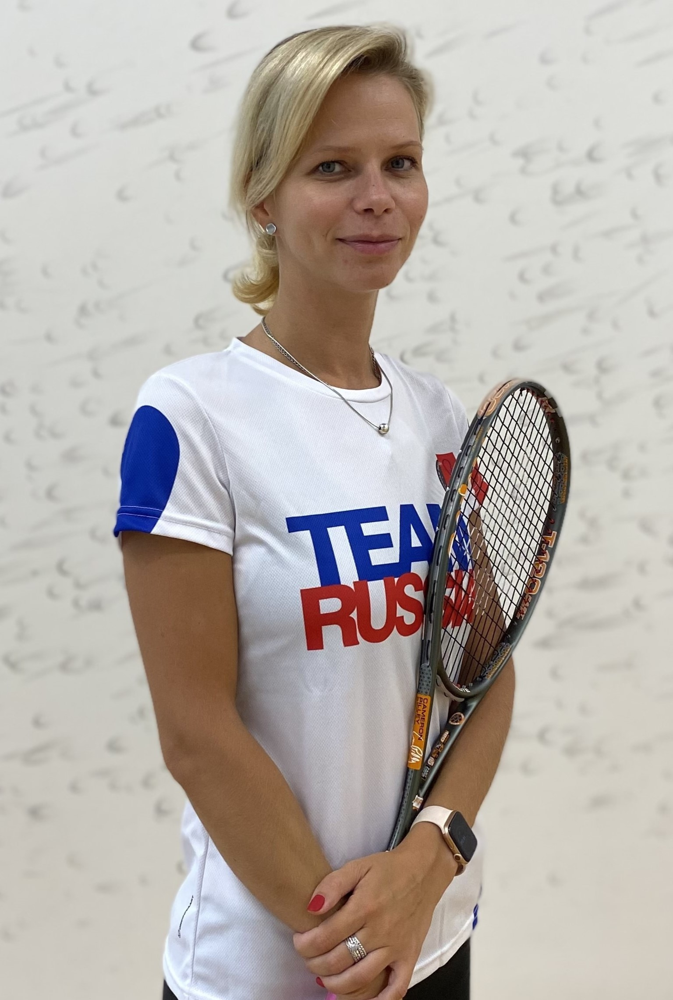

Опыт работы трениром по сквошу: 10лет
Личные качества: Глубокие знания техники и правил
игры, а также опыт работы с игроками всех уровней - от начинающих до
профессионалов. Опыт подготовки команды для участия в международных соревнованиях.
Опыт работы трениром по сквошу: 6лет
Личные качества: Умения подготовки юниоров, опыт работы с группами детей от 7 лет.
Опыт проведения турниров, опыт работы с большими группами людей.
Опыт работы трениром по сквошу: 1год
Обладаю глубокими знаниями техники и правил
игры, а также опытом работы с игроками всех уровней - от начинающих до профессионалов. Успешно развивал
и подготавливал команды для участия в международных соревнованиях. Отличные коммуникативные навыки,
способность мотивировать и вдохновлять игроков.
Опыт работы трениром по сквошу: 3года
Личные качества: Тренер с умение найти общий язык с подростками и взрослыми.
Опыт работы с новичками, которые хотят научиться играть в сквош.